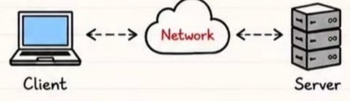
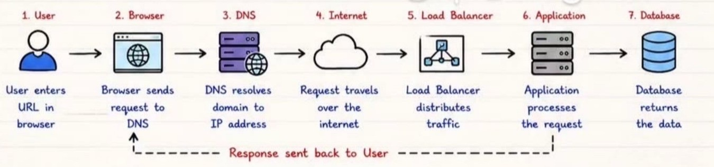

Chapter 01
Introduction to
Computer Networking
1What is Networking?
Networking is the process of connecting two or more devices to exchange data and share resources using communication protocols.
3Client ↔ Server Architecture

- Client (User/Device) sends a request.
- Server processes the request.
- Server sends back the response.
2Why Networking matters in DevOps
- Enables communication between tools, services & users
- Critical for CI/CD, monitoring, logging & automation
- Ensures security, performance, scalability & reliability
- Foundation of Cloud, Containers & Microservices
4LAN, WAN & Internet
LAN (Local Area Network)
Connects devices in a small area like home, office, campus.
WAN (Wide Area Network)
Connects LANs over large distances like cities, countries.
Internet
Global network of networks that connects the world.
5Real-world Request Flow (Example)

6Where Networking is used in DevOps
⭐Interview Tip
Networking is one of the most frequently tested topics in DevOps interviews.
💡Remember
Every application request depends on networking before reaching the server.